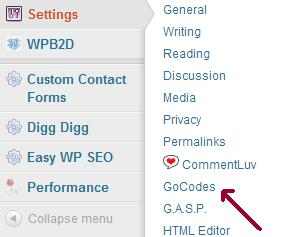
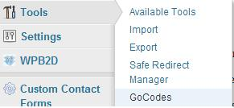
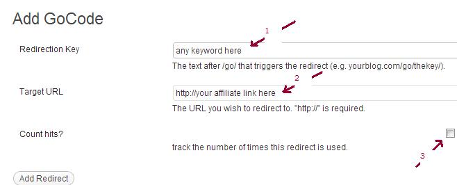

Oh my God!! Google algorithm changes are not letting me earn money :D. Yeah, I’m talking about affiliate links. You must be aware that too many affiliate links can badly impact your search engine ranking. Sometimes even worse, if that link is considered as a paid link then oops! traffic gone! ya, I am not kidding it happened with many of the big sites. So my question is Do I need to stop affiliate marketing?? Off course No. Just because search engine doesn’t like it, we cannot stop doing that. Is there any way to save our website from being penalize? yes, that’s why I am sharing this post. Here, we will see how to cloak affiliate links to avoid any penalty. Cloaking not only saves you from search engine bot, it even changes your ugly affiliate link to a awesome link. User would more likely to click on such links.
Cloak affiliate links using Gocodes wordpress plugin
Step 1: Download the plugin from below link and install it.
Download link: Gocodes Plugin for hiding affiliate links.
Step 2: Go to settings >> Gocodes, as shown in the below snapshot.

Now! You would find two things there.
URL trigger: Give any keyword here such as loves, recommend etc.. By default it’s “Go”
Nofollow Gocodes: Check this box for obvious reasons. Hope no explanation required here :D.
Step 3: Go to Tools>> Gocodes, as shown in below screenshot.

Step 4:
- Redirection key: Use your keyword, for example you are promoting Gocodes plugin so you can give Gocode.
- Target URL: Give your affiliate link here.
- Count hits checkbox: Check it to keep the count of hits on your cloaked affiliate link
- Click on add Redirect.
- your cloaked link would be like – http://your-domain-name/go/(redirection keyword)

That’s it, you are done with it.
The SEOPressor version 5 also has a auto interlink feature for affiliate links, it cloaks the affiliate links and auto interlink your specified keywords with cloaked links.
Mark All cloaked links Nofollow
Once you are done with above steps, you would be having your pretty affiliate link. You can now promote this link using anywhere in your webpages. But remember, in order to hide them completely from search engine bots,you need to nofollow them. Just add rel"nofollow" in the link.
Bulletproof protection from search engine bots: Update robots.txt file
If you have added nofollow to your cloaked link then crwaler wouldn’t follow it and you are safe. But to be safer side you can permanetly block your affiliate links to be followed by search engine bots. This would be useful if you forget to mark your affiliate links as nofollow.
By default URL trigger is “go” so you need to add below line in your robots.txt file
Disallow: /go/
Suppose you have done some changes in URL trigger then use changed keyword instead of go. e.g. if your redirect key is “recommend” then you may need to below statement in robots.txt file of your domain.
Disallow: /recommend/
Hope you liked the article. Please let me know if you have any questions about “how to cloak affiliate links”, I would love to help you out :)
Image courtesy of Stuart Miles at FreeDigitalPhotos.net
thanks- nice advice, you really break it down so we can understand please continue to update us, we need someone like you to give us the info we need!! thank you angain.
Thanks for the breakdown.
Just one thing I’m confused about- I am using your advised GoCodes plugin, and it masks my links just fine. However when I click on the masked link, the URL in my browser still shows my original affiliate link with ID. Can hackers still steal my identity and commission dollars from here?